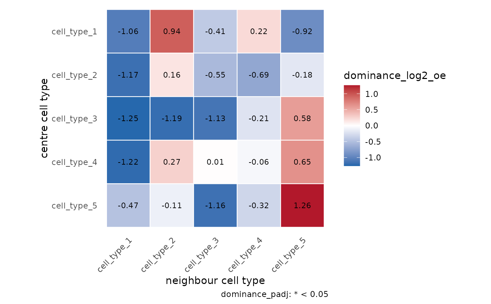

Heatmap of a single-sample neighbourhood enrichment with significance
Source:R/group_compare_plots.R
plot_nhood_heatmap.RdPlot the `log2_oe` matrix returned by [nhood_enrichment()] and mark the cell-type pairs that pass the within-sample test after Benjamini-Hochberg correction over all K (K + 1) / 2 unordered pairs (`padj`). The matrix is symmetrised (mean of i -> j and j -> i).
Arguments
- res
Output of [nhood_enrichment()] (or the list stored by [nhood_enrichment.Seurat()] in `misc`).
- value
Matrix to plot: `"log2_oe"` (default) or `"log2_oe_raw"` (pair-level, shown averaged over the two directions, so the heatmap is symmetric), or the directional `"contact_log2_oe"`, `"dominance_log2_oe"`, `"contact"`, `"dominance"` (row = centre cell type, column = neighbour cell type; shown as computed, not symmetric).
- significance
Matrix of p-values to mark. Defaults to `"padj"` for pair-level values and `"contact_padj"` / `"dominance_padj"` for directional ones; `NULL` for no markers.
- breaks
Increasing thresholds for `*`, `**`, `***` (one to three values). Levels below the smallest attainable adjusted p-value (1 / (n_perms + 1) for max-T) are dropped from the legend.
- limits
Fill limits; values outside are squished. Defaults to a symmetric range around 0.
- show_values
Print the value in each tile.
- triangle
`"full"`, or `"lower"` to show each pair once.
Examples
if (requireNamespace("ggplot2", quietly = TRUE)) {
df <- generate_sim(close_ratio = 0.8, n_types = 5, n_cells = 800,
max_loc = 450, test_type = "distribute",
distance_param = 10, seed = 1)
rownames(df) <- paste0("cell", seq_len(nrow(df)))
res <- nhood_enrichment(df, cluster_key = "cell_type", neighbors.k = 10,
n_perms = 100, seed = 1, n_jobs = 1)
plot_nhood_heatmap(res)
plot_nhood_heatmap(res, value = "dominance_log2_oe") # directional
}
